LangGraph.js Server Agents
Video Link: https://youtu.be/MWhVpp1roKk
GitHub Repository: https://github.com/Ashot72/Ashot72-LangGrap.js-Server-Agents
LangGraph.js is a library for building stateful, multi-actor applications with LLMs, used to create agent and multi-agent workflows. Compared to other
LLM frameworks, it offers these core benefits; cycles, controllability, and persistence.
The LangGraph Server is a component of the LangGraph platform, designed to facilitate the development and deployment of applications built with
LangChain's LangGraph framework. It serves as an API server that integrates various tools and technologies to support the execution and management
of LangGraph applications.
LangGraph.js Server Agents the we built are specialized agents built and run within the LangGraph Server environment. These agents are defined using the LangGraph framework, an
extension of LangChain designed for creating stateful, multi-step workflows (like conversational agents, tool-using assistants).
We defined three agents: Chat, Search Job Notification, and Supervisor Agent, which determines which agent to use and routes the user prompt accordingly.
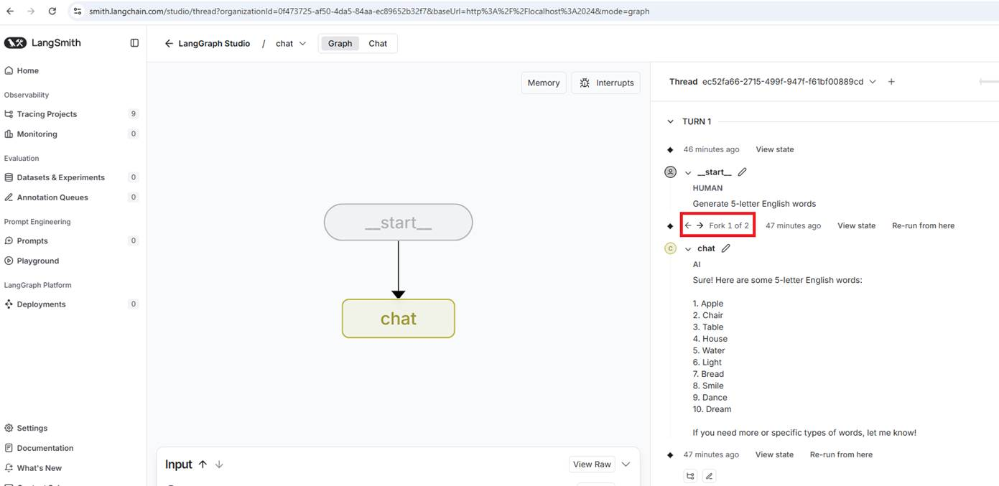
Figure 1
The Chat Agent is used for answering simple questions, such as Generate 5-letter English words. Note: You can edit the question to receive a new answer (fork it).
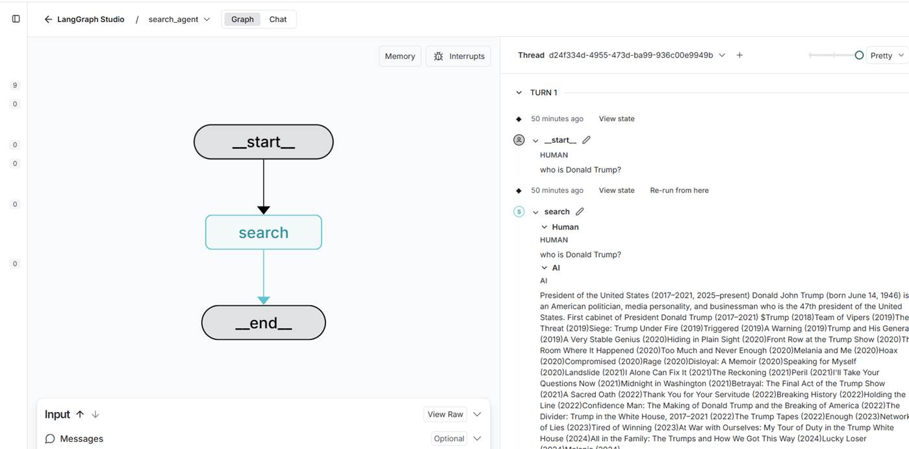
Figure 2
The Search Agent searches the web in real time using Tavily Search.
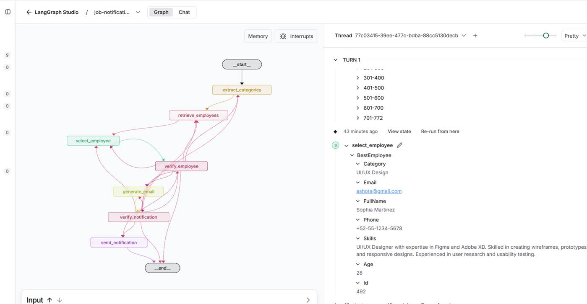
Figure 3
I developed a Job Notification agent in Node.js. You can explore the project on GitHub: Job-Interview-Notification-AI-Agent-LangGraph-JS, where detailed documentation is available.
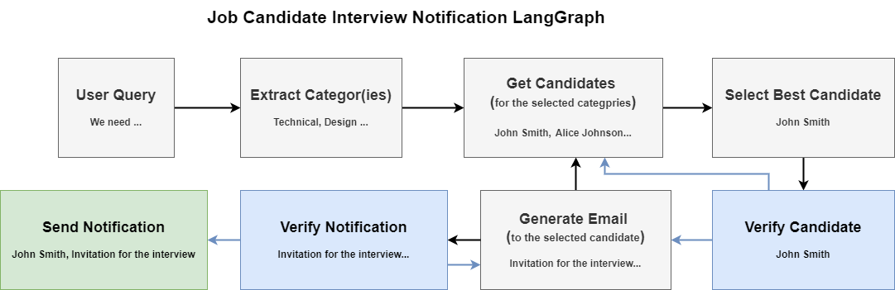
Figure 4
In the app, the AI agent will select the matching job categories based on a prompt from the Categories.json file. Then, from the respective categories, matching candidates in the Candidates.json
file will be selected based on their skills. The app follows a human-in-the-loop (HITL) approach, requiring human intervention before proceeding with certain tasks. If the selected best candidate
does not satisfy the recruiter, they can skip it and ask for the next best candidate. If the best candidate is selected, an email notification generated by AI will be sent to the candidate. If the
generated email does not satisfy the recruiter; they can skip it and ask for another one with different content.
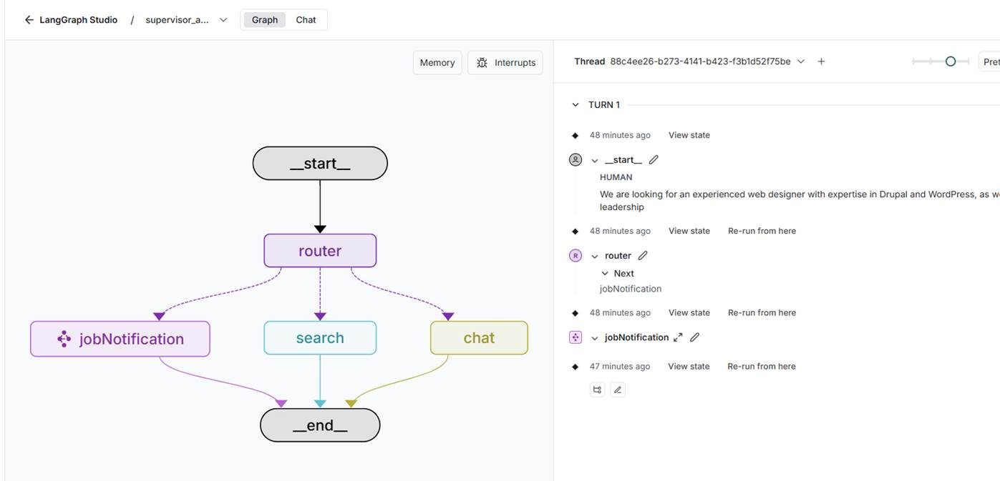
Figure 5
Supervisor Agent determines which agent to use and routes the user prompt accordingly.
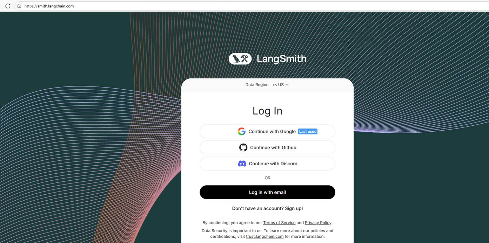
Figure 6
In order to use LangGraph Server, we need to register with LangSmith which is a comprehensive DevOps platform designed to support the development, debugging, testing, evaluation, and monitoring of large
language model (LLM) applications. Developed by the creators of LangChain, LangSmith addresses the challenges of transitioning LLM applications from prototypes to reliable, production-ready systems.
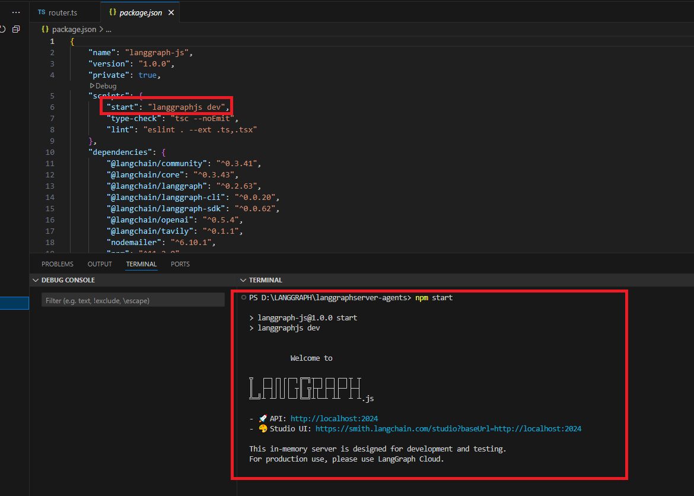
Figure 7
We use LangGraph Server for local development which is free.
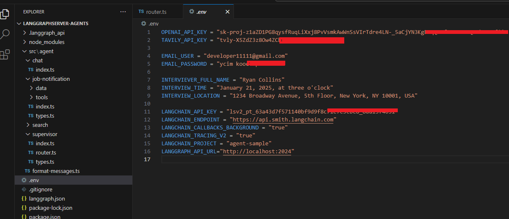
Figure 8
For the app, we use the following keys and credentials in the .env file:
OPENAI_API_KEY and TAVILY_API_KEY (which is free) for interacting with APIs.
EMAIL_USER and EMAIL_PASSWORD for sending job notifications via email.
INTERVIEWER_FULL_NAME, INTERVIEW_TIME, and INTERVIEW_LOCATION are included in the email for job interview details.
LANGCHAIN block is required to connect to LangSmith to run the LangGraph server.
The LANGCHAIN_API_KEY is free and provided after registration.
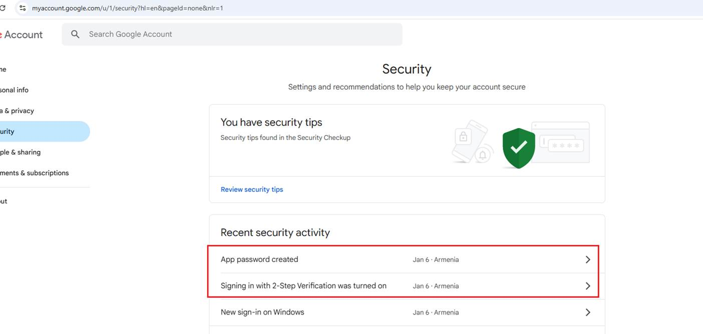
Figure 9
Sending emails is tricky when using the NodeMailer package. If you specify your Gmail username and password, it will not work. Google has changed its policy regarding this feature,
rendering it ineffective in resolving the problem. Thankfully, there is a solution that involves enabling 2-Step Verification and generating an app password.
Navigate to https://myaccount.google.com/u/2/security?hl=en enable 2-Step Verification, and create an app password, which I have already done. Then, put the app password in the .env file.
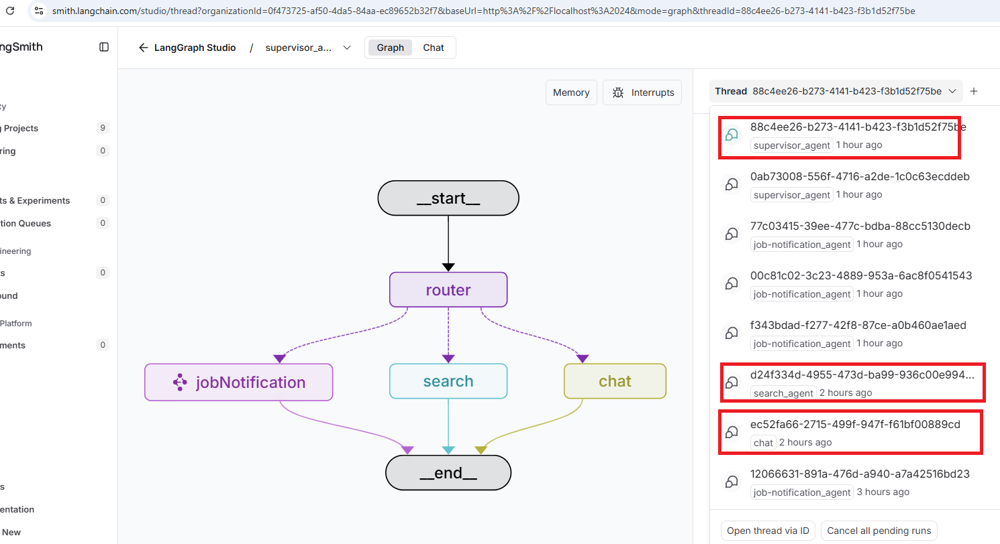
Figure 9
When we developed the server agents, we had in mind a web-based application that would make requests to the LangGraph Server agents and render the responses. It will connect to any agent,
including the supervisor, and display all the previous threads, similar to ChatGPT, where users can revisit and continue the conversation. The app will also allow users to edit the prompts and
resubmit them (fork them), similar to ChatGPT.
The app follows a human-in-the-loop (HITL) approach, requiring human intervention before proceeding with certain tasks, as demonstrated in the Job Notification Agent, where the
agent interrupts at two points.
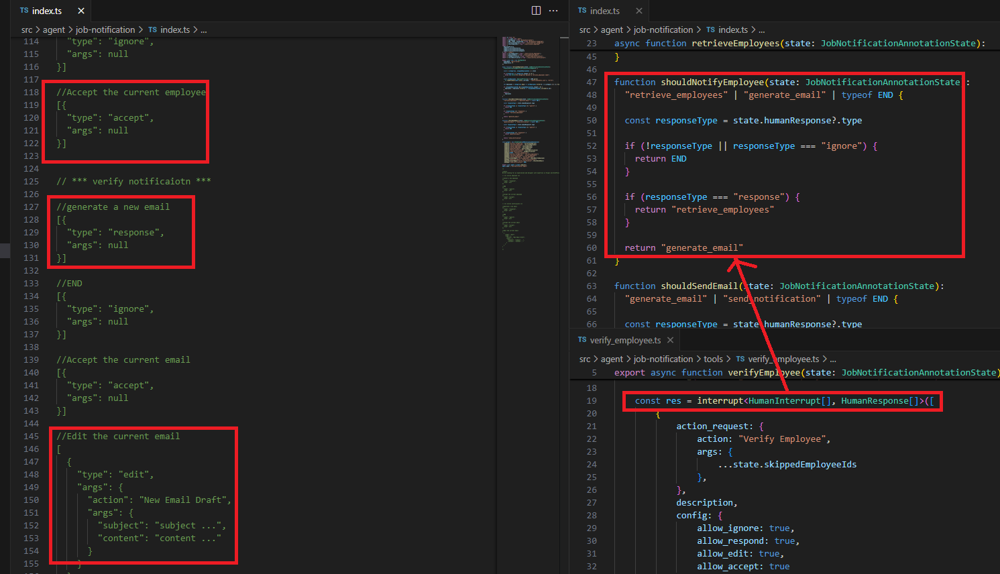
Figure 10
When a user tries to select the best employee, the agent should allow the user to choose another one. This is where interrupts are used. Based on the interrupt type such as ignore,
response, accept, or edit the user is redirected to the corresponding node.